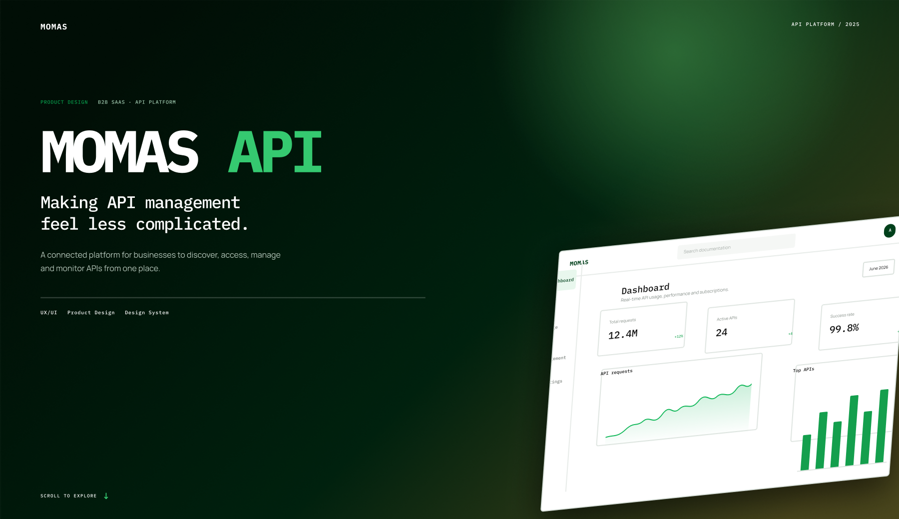

(Yes, the one you've been searching for.)
From Lagos NG, where I design software that travels further than I do.
Fintech, health, fashion, education, billing, finance. If it lives on a screen and real people use it, I've probably designed something like it.
I design digital products that make complex things feel simple, intuitive, and useful.
If you want someone who gets your vision and brings it to life with care, clarity, and intention — you're in the right place.
Let's work on your next project together!
…than aesthetics and aesthetics alone.
You could scroll past... but then you'd miss out on a designer who can:
I'm the kind of designer who'll spot your UX problem, and fix it before the meeting ends.
I don't just make screens pretty. I research, design, test, and then defend every decision like my reputation depends on it. Because it does.
If you're looking for generic wireframes and safe choices, I'm the wrong person.
If you want functional, intentional design that solves real problems? You just found me. 👋
A few of the projects I have worked on…

A unified API platform powering utility and payment products — designed to make a complex developer ecosystem easy to discover, test, and monitor.
An Advanced Metering Infrastructure platform helping electricity distribution companies monitor, manage, and interact with smart meters from one dashboard.
An AI-powered investment app that helps people discover, understand, and explore securities without wading through financial jargon.
…and the journey only gets better from here.
View more projects here.Hard skills, soft skills, and the tools that make it happen.
A consistent track record of designing products that make an impact.
Formal education combined with focused design skills training.
Economics graduate with strong analytical thinking, research, and problem-solving skills, bringing a data-driven and strategic perspective to how I understand users, businesses, and digital products.
Product design, UX research, user flows, wireframing, prototyping, UI design, design systems, usability testing, design thinking, Figma, and professional mentorship.
Digital media, social media management, content creation, video editing, product photography, digital communication, and technology fundamentals.
A growing body of work shaped by curiosity, creativity, and problem-solving.
I'm a Product Designer who uses design thinking to turn business challenges into thoughtful, useful digital experiences.
My background in technical support and product design gives me a practical understanding of people, technology, and the problems that shape digital experiences. I've worked across fintech, energy, billing, education, and enterprise technology. Most recently, I designed InvestIQ, an AI-powered investment platform for discovering and understanding investment opportunities.
My curiosity goes beyond design. With a background in Economics, I'm building toward a growing interest in finance, investment analysis, and investment banking through learning, research, and hands-on financial work.
I’m also curious about how things are built. Lately, I’ve been having fun building websites and exploring Flutter, JavaScript, Claude Code, and AI Automation. It's me just finding new ways to bring ideas to life beyond the design canvas.
When I’m not designing, learning, or building, I’m probably journaling, writing, exploring the beauty of the internet, or following whatever has caught my curiosity lately.
I’m still becoming. That’s probably the most consistent thing about me. There’s a lot to me beyond what fits on a CV.
Find me across my socials below. 👇🏾
Real words from real people and organisations.
Working with Margaret has been a smooth experience. She listens to feedback, pays attention to details, and takes her responsibilities seriously. She’s also good at communicating progress and following through on tasks, which makes collaboration easier.
Margaret is willing to learn, ask questions, and explore different ways of solving problems. She takes initiative when needed and is open to feedback. I appreciate her thoughtful approach to work and her willingness to keep improving.
Margaret is organised and committed to the work she takes on. She pays attention to both the details and the bigger picture, and she works well with different people to move tasks forward. Her consistency and willingness to collaborate have been valuable to the team.
If you're looking for someone who understands your vision and knows how to bring it to life with care, clarity, and creativity, you're in the right place. Let's create something meaningful together.
An AI-powered mobile app that detects water quality risks in real time, designed end-to-end from sensor onboarding to alert system.
View Live Product ↗There's more on my Behance profile, including case studies and process. And if you're building something interesting, I'd love to talk about it.
Oops! There are no projects available at the moment. Check back later.
A unified API platform powering utility and payment products — designed to make a complex developer ecosystem easy to discover, test, and monitor.
An Advanced Metering Infrastructure platform helping electricity distribution companies monitor, manage, and interact with smart meters from one dashboard.
Improved how customers complete, understand, and recover from electricity vending — through support, retry flows, and emergency access.
An AI-powered investment app that helps people discover, understand, and explore securities without wading through financial jargon.
A connected water-sensor concept that turns raw sensor data into clear status, insights, and alerts before small problems become expensive ones.
An AI-powered platform that reconciles account statements, flags discrepancies, and supports loan eligibility decisions — so the numbers explain themselves.
A social app for 8–12 year olds built around drawing and sharing artwork with friends — instead of likes, followers, and open chat.
A desk device and companion app that turns task management into something you can glance at, press a button on, or just talk to.
A resident app and estate management platform bringing electricity, SOS, visitors, vehicles, and services into one connected experience.
A shared dashboard for small teams to track spend, approvals, and budgets in one place.
A study companion for exam prep — bite-sized lessons, practice questions, and daily streaks.
A visual style finder that turns browsing into buying — pairing outfits from a single starting piece.
If you're looking for someone who understands your vision and knows how to bring it to life with care, clarity, and creativity